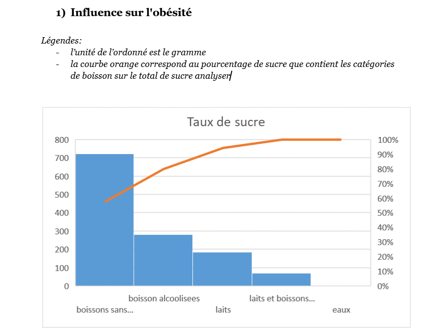

Après avoir traité et analysé nos données, il reste une étape cruciale : les contextualiser. Cette phase, souvent négligée, est pourtant essentielle pour donner du sens aux résultats et favoriser une meilleure prise de décision. Nous avons pu y être confrontés lors d’un projet de groupe intitulé SAE — Mise en œuvre d’une enquête. Ce projet adoptait une démarche originale : au lieu de répondre à une problématique précise à partir de données existantes, nous avons nous-mêmes construit un questionnaire dans le but de rédiger un rapport sur l’impact des boissons sur la santé des Français.
L’un des défis majeurs a été de formuler une conclusion cohérente à partir de résultats parfois ambigus. Malgré un sujet en apparence simple, les données disponibles n’étaient pas toujours explicites, à l’exception de certaines sources fiables accessibles en ligne.
Nos résultats ont mis en évidence une forte corrélation entre la consommation excessive de boissons sucrées et l’augmentation du taux d’obésité en France. Cette surconsommation concerne en particulier les sodas et autres boissons sans alcool, qui représentent à elles seules près de 60 % du sucre total identifié dans notre étude. Ces observations sont confirmées par les données de la Fédération Romande des Consommateurs. Il apparaît donc essentiel de sensibiliser le public aux risques associés à ces boissons et de promouvoir des alternatives plus saines.
Voici un extrait du questionnaire que nous avons élaboré, ainsi que quelques résultats recueillis :
Ce travail d’enquête a nécessité une forte collaboration en équipe. Chacun avait des idées différentes sur la manière de construire le questionnaire, d’interpréter les données ou de rédiger les conclusions. Trouver un terrain d’entente n’a pas été simple, mais cette expérience m’a permis de réaliser l’importance d’un langage clair, accessible et bien contextualisé pour faire parler les données. Sans cela, même une analyse rigoureuse peut perdre tout son impact.